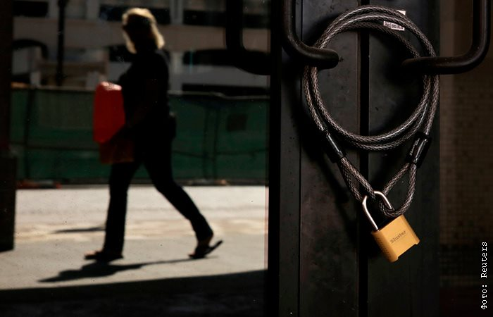
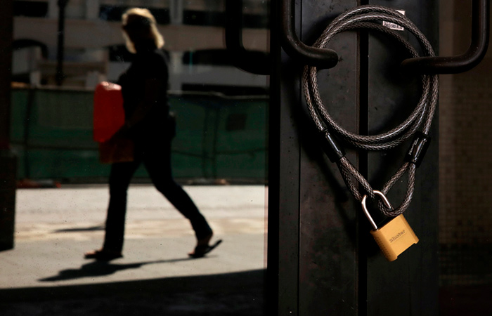
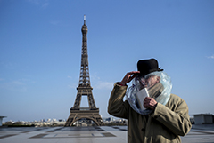
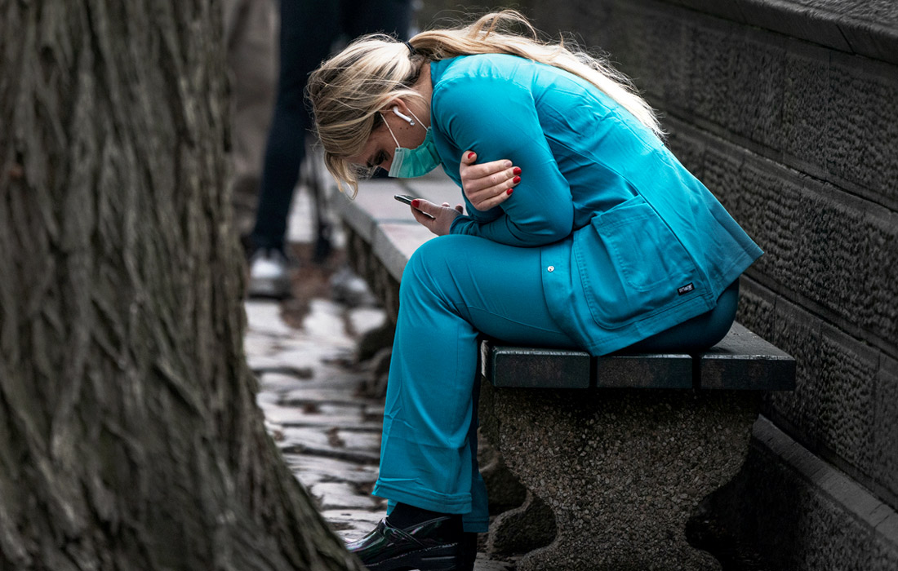
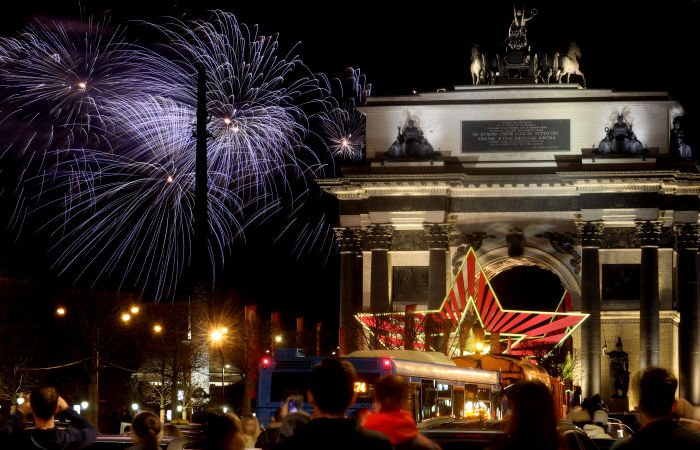
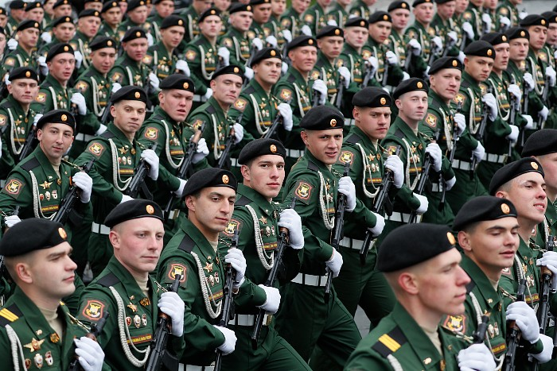

Собянин заявил о необходимости закрытия всех ресторанов и кафе в выходную неделю

Москва.25 марта.INTERFAX.RU - Мэр Москвы Сергей Собянин анонсировал новые ограничения в связи с тем, что ранее в среду президент РФ Владимир Путин объявил следующую неделю нерабочей; эти ограничения, в частности, коснутся точек общепита.
'Я считаю, что рестораны и кафе не должны работать, парки, особенно центральные.У многих возникнет в эти дни желание приехать в Москву, чтобы погулять.Так вот в Москве в это время будет нечего делать!Лучше находиться дома', - подчеркнул Собянин в прямом эфире телеканала 'ТВЦ'.

Мэр добавил, что производственные столовые смогут продолжать работать в выходную неделю, а публичные рестораны - нет.'Торговые комплексы огромные, которые привлекают большое количество людей, за исключением залов, где продают продовольствие, товары первой необходимости, тоже вряд ли должны функционировать в это время', - подчеркнул мэр.
По его словам, все увеселительные точки в Москве также прекратят работу в выходную неделю, торговые предприятия, которые не продают товары первой необходимости, следует закрыть.
'Я считаю, что мы должны подумать и над дополнительными ограничительными мерами, которые будут реализованы в выходные дни.Мы над этими мерами подумаем, и, думаю, завтра о таких мерах расскажем', - сказал Собянин.
Московский мэр обратил внимание, что нерабочая неделя в России вводится для того, чтобы побороть нарастание заболеваемости коронавирусом в стране.'Подчеркну: эти дни нужно нам использовать, чтобы уменьшить скорость распространения инфекции, сгладить эти пики, которые нарастают', - сказал Собянин.
Столичный градоначальник пояснил, что 'когда идет резкий пик нарастания инфекционного заболевания, идет и резкий рост количества людей, которые себя очень плохо чувствуют, тяжело переносят болезнь'.
'Чем больше в этот небольшой промежуток времени таких людей, тем сложнее справляться медицинской системе.Поэтому нужно сделать все, чтобы скорость распространения снижалась.Для этого эти каникулы и придуманы', - пояснил Собянин.
Вместе с тем все городские службы Москвы в предстоящую нерабочую неделю будут функционировать в режиме повышенной готовности, отметил Собянин.
'Городские службы, как и во все праздники, будут работать в режиме повышенной готовности.Так же будут работать медицинские службы, органы госвласти.Не думаю, что все чиновники должны работать, но те, которые должны быть на своем посту, должны работать', - отметил мэр.
Он добавил, что это относится также к правоохранительным органам, транспортным службам, банкам и продовольственным магазинам.'Есть ограничения, но они мягкого свойства', - сказал Собянин.
Ранее в среду президент Владимир Путин в своем телеобращении к россиянам объявил следующую неделю нерабочей с сохранением заработной платы.Таким образом, длинные выходные продлятся с ближайшей субботы 28 марта по воскресенье 5 апреля.Такое решение было принято в связи с распространением коронавирусной инфекции.
Однако соответствующий указ Путина о нерабочей неделе не распространяется на сотрудников ряда организаций, сообщал ранее сайт Кремля.В частности, согласно документу, его действие не распространяется на работников непрерывно действующих организаций; медицинских и аптечных организаций; организаций, обеспечивающих население продуктами питания и товарами первой необходимости.

Posted On: 2020-03-25T17:23:00



Content Date: 2020-03-25
Download Date: 2021-05-13
Document ID: L0C04BZTE